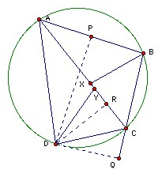

ABCD is cyclic. The feet of the perpendicular from D to the lines AB, BC, CA are P, Q, R respectively. Show that the angle bisectors of ABC and CDA meet on the line AC iff RP = RQ.
Solution
Thanks to Li Yi

APRD is cyclic with diameter AD (because angle APD = angle ARD = 90o. Suppose its center is O and its radius r. Angle PAR = ½ angle POR, so PR = 2r sin ½POR = AD sin PAR. Similarly, RQ = CD sin RCQ. (Note that it makes no difference if R, P are on the same or opposite sides of the line AD.) But sin PAR = sin BAC, sin RCQ = sin ACB, so applying the sine rule to the triangle ABC, sin RCQ/sin PAR = AB/BC. Thus we have AD/CD = (PR/RQ) (AB/BC). Suppose the angle bisectors of B, D meet AD at X, Y. Then we have AB/BC = AX/CX and AD/CD = AY/CY. Hence (AY/CY)/(AX/CX) = PR/RQ. So PR = RQ iff X = Y, which is the required result.
Note that ABCD does not need to be cyclic! Exercise: does it need to be convex?

© John Scholes
jscholes@kalva.demon.co.uk
25 Jul 2003
Last corrected/updated 22 Aug 2003